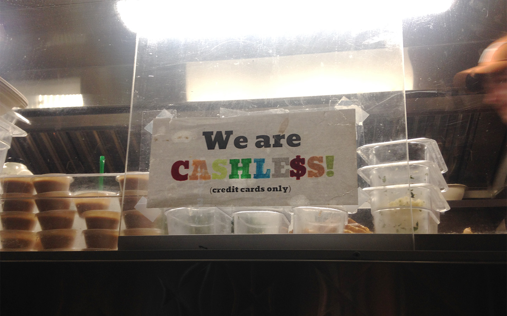

Every year, for 10 days in the middle of March, over 400,000 people descend upon Austin, Texas to attend the thousands of varied events, talks, and festivals that combine to form South by Southwest (SXSW).
Our team had a blast. Since there was so much to talk about, we decided to break the post up to share our own unique perspectives. We decided to chunk our thoughts and findings into three categories: What we experienced during SXSW that better informed our Capstone project, our favorite thing that week, and what we found most surprising.
Zohaib
Best MC takeaway
Capital One’s ‘How Can I Control My Credit Card Footprint?’
As part of our Capstone research, we attended several talks to get a sense of what other financial industry players are working on.I attended one hosted by Capital One: ‘How Can I Control My Credit Card Footprint?’. It was essentially a pitch for an innovative new product Capital One has developed.
A year ago, they released an SMS chatbot they called Eno (One backwards), that consumers could text to ask simple questions like what their current bank balance is. They’re now leveraging Eno and taking it a step further. They started with the premise: Why do we always have to give our one credit card number, with all its privileges, to every single merchant out there?
Their new product is a browser extension that recognizes when you’re on a checkout page. If you haven’t shopped with that merchant before, Eno will create a virtual card number specifically for that merchant. The next time you visit the same online store, Eno will auto-populate your financial information. The virtual credit cards are different for each merchant.
Therefore, if a credit card number is compromised, the setback to the consumer is minimized, since they can just deactivate that single number tied to that merchant.
To discuss the product, Capital One had a panel with several of their executives, moderated by Lance Ulanoff, editor-in-chief at Mashable and previously PCMag. They talked about what they termed the ‘couch potato factor’ - if people don’t have their card on them while browsing online stores, they won’t go through with an actual purchase a significant amount of the time since they’re ‘lazy’ and won’t get up to find their wallet if they are on the couch watching TV.
One interesting moment was when the panel moderator asked a question specifically to the VP of Design on the panel - what happens when the primary card expires?
After a few moments, she blurted out, “I don’t know!” Then a few other folks on the panel engaged in damage control (if it expires, it’s just like any other credit card, etc.)
That brought us to another topic: Why do credit cards expire in the first place? A question that the panel had no good answer to.
Favorite Thing
I got to see Elon Musk, in the flesh, speak about his plan for Mars, SpaceX and Tesla, how both companies almost went bankrupt, and the Boring Company. It was a complete fanboy moment.
Maybe more amazing than that was the ability to contrast perspectives from both him, a visionary who is thinking decades, if not centuries, into the future, and Sadiq Khan, the mayor of London, who as a politician is firmly focused on the present and the next few years until he can run for Prime Minister. That to me really demonstrated the power of SXSW.
Surprise
How terrible some of the big name companies did at the event. I attended a Facebook talk by members of the Facebook IQ team, and it was completely substance-free. Not jargon-free though. I got this gem: “Augmented Virtuality”, after which I promptly departed.
I heard the Google house was a complete mess, with several Google Assistants not working like they should have been due to all the crosstalk, all while being ordered by overly enthusiastic actors doing their best to pretend how everything was fine, and that Google Assistants will transform your life.
Nika
Best MC takeaway
Food Trucks: “We don’t take cash”
While walking up to grab some mouth watering food from Chi’lantro, one of Austin’s most famous food trucks, a sign caught my eye: “Chi’Lantro does not accept cash”. Chi’lantro isn’t an exception. All of the food trucks near SXSW accept cards, and a large percentage don’t accept cash. This is very different from our observations in the past, where small businesses prefer cash to avoid additional costs.
Speed and safety are the main reasons for this cashless policy. Accepting cards saves the trouble of counting cash and finding change, and significantly lowering the risk of theft. However, the question is why this trend is apparent here in Austin. The huge customer volume at downtown Austin where there are events constantly going on is perhaps one factor. The cost of processing fees and hardware investment is negligible comparing to the loss of customers due to longer wait times.
Another factor is the context and peer influences. How strange would it is to walk out from a talk about future technologies, only to find out you still have to deal with counting wrinkled paper bills! In fact, I recently saw a thread on Reddit where a SXSW merchant was asking for advice on how to support Bitcoin as a payment method.
On the opposite note, this scene at SXSW is not representative. Many food truck business run on small marginal profit, and so processing fees eat up a greater percentage of the profit. Also, since many food trucks have a fixed location and customer base, the customers learn to adapt to the payment methods supported by the merchants. So the question remains: How can we make digital microtransactions more cost effective?
Favorite Thing
Design for memorable experiences ( Weird Japanese startups at SXSW trade show)
My favorite thing was the SXSW Trade Show, where companies from all over the world come to showcase their products related to interactive technology. The Japanese section caught my eye because it simply is a digital playground. Here you could dip your head into a hole on the ground to experience the view on the “other side of the world”, use hand gestures to control a floating statue, pet a responsive pillow with a tail, or shop in a virtual world with all the clothes flying by you… Many of these technologies arguably aren’t “useful”. However, I really appreciate the thought put into human emotion and building memorable experiences. As emotional beings, humans constantly seek new emotional or sensational experiences. Can we take the emotional factor into consideration when designing for payments and add more delight to the experience?
Surprise
The focus on AI ethics
AI was one of the biggest themes at SXSW 2018. To my surprise, a good portion of the talks focus on the ethical issues of AI. Gender and race equality is a frequently discussed topic. One rule of thumb is to train AI with unbiased data. I’m glad to see how the people shaping the future of AI are putting a lot of thought and effort into the ethical side of the technology.
It also leads me to think: can card-only payments be a form of discrimination for lower income populations? How can we include everyone while moving together into the age of a cashless society? There is also the big question of: is convenience always a good thing? What if payments are so convenient, people no longer take the time to think about budgeting and make people prone to debt?
Scott
Best MC takeaway
Ant Financial Cashless Cities (and Chinese design)The most interesting payments-related speaker at SXSW was definitely Shanying Leung, the Design Director for Ant Financial (AliPay).
His talk, entitled “Designing for Cashless Cities” was a fascinating look into the Chinese payments giant, and a glimpse into the future of cardless payments. Alipay is huge, it’s the world’s largest online digital pay platform with 500M users.
Just one hour before his talk, John Maeda gave his Design in Tech Report 2018. Leung prefaced his talk with a quote from Maeda’s talk, "Chinese design and tech principles are leading the world but often overlooked". Beyond Cashless Cities, Leung really spoke as an ambassador for Chinese designers and what innovations they’re pushing in their own way.
Leung framed his talk in a timeline of his life in comparison to the US and China GDP.
- 1977 - born, China's GDP was 8% of the US. Chinese workers were known as "Blue Ants", all wearing the same blue garb, all living the same way. Two hundred years ago, China was 1/3 of the global GDP at the time.
- 1995 - China was 10% of US GDP
- 2017 - Now China is 65% of the US GDP (some predictions are that it'll overtake US in next 15 years). 6200% growth in last 15 years
What does the Cashless City mean? Wherever you go in China, you just use your mobile phone or another device. He only touches his wallet in China when he needs to take out his ID. In Austin, everyday he is reaching for his wallet to pay for things. In China at the hospital, on the bus, paying for parking, groceries, transit, it's the norm to only use your phone.
However, he highlighted many of the social issues that are creeping up in China, namely extreme pollution and rural areas being left behind economically. Instead of focusing on the reasons why China has adopted QR codes on the phone for many digital transactions, Leung focused on a few projects his group has made to help assuage these. He focused on how designers need to be business oriented - what broader impact can we bring to society? What can we do as designers for social responsibility?
Some ExamplesAnt Forest, a minigame within Alipay, basically encourages users to reduce their Carbon Footprint. Socially gamified, walk to work, when you use digipay you get "green points" and Alipay will buy a tree and plant it for you. People are socially engage 280M people used game. 13M trees were planted in Ant Forest and carbon emissions reduced by 2M tons.
Ant Farm, targets charities to fix gap between rural and urban, poor. DigiChicken, when you do digipay, you get food for the chicken, the chicken lays eggs, once you get enough, heart of Love you receive, AliPay donates something to rural charities.
Chinese New Year - Leung sees younger people that aren't really keeping up older cultural Chinese traditions. So they made the "5 Fortune Project" - if you write down “Fou” (good luck), you use their AR app to scan it, and then you collect Fou cards. You get a digital red envelope with a small amount of money in it. 250M people got a red envelope this year. As users collect red envelopes, they are asked to buy a Chinese new year gift, and AliPay will cover delivery fees, and will be sent to rural area children.
Back to Cashless Societies…
Voice recognition and face scanning are playing a role beyond QR codes too. In the subway in Beijing, you can use your Voice and Facial recognition to go through entrance currently. At Amazon-locker-type pickups, you can open a box with face scan.
However, the QR code still rules. Huawei, Xiaomi, OPPO, and Vivo comprise 66% of the smartphone market in China. Street food vendors or grocery owners or his example of a 76 year old laborer - all have QR codes. Laborer used to carry tons of coins but for 50 cents, they can have a high quality print out and delivered lanyard with a laminated QR code of their account. Many poor and rural laborers benefit from this ease of payment and it opens up new avenues of work to them.
There was no discussion of the security concerns about these technologies, naturally, but Leung was very proud of what they’ve made, and are working on for the future. He left with the conclusion that designers now have a broader mandate to affect positive change in business and social responsibility, and was happy to share Chinese innovate across cultures in Europe, the US, and here at SXSW.
One last interesting tidbit was a trip to the Whole Foods HQ. They have a number of Amazon lockers, much like many other locations around the US, but they also have refridgerated lockers that allow you to order food online and come pick up perishables in the store at your convenience.
Surprise
After the first few days at SXSW, I was generally let down by a number of the design topics I already had some domain knowledge about. So I branched out. Some of the most rewarding talks for me were in places I never expected. I sat in on one about the Future of the Trucking industry, with a number of startups focused on data collection, P2P marketplaces, and safety. Uber and Lyft are going after the taxi industry ($17B), while non-recurring truck freight is a $100B industry. It was fascinating to hear about the changes there.
Also, VR in Healthcare was a great talk, showing some terrific results getting patients lower doses of meds, or off of narcotics completely with VR scenes as a treatment. I was also happy to see Skylar Tibbets, an MIT digital fabrication researcher speak, as well as Daniel Davis, a friend and head researcher at WeWork. Both of these sessions yielded wonderful glimpses into their research and great discussion questions afterwards.
Favorite Thing
Beyond some of the terrific talks SXSW had to offer, I think Austin itself was my favorite part. The city is alive with music, as well as terrific food. I had plenty of tacos or bbq and splurged on food while I was there. The music scene is great and I was happy to see a number of performances, the best of which may go to Low performing with an organ in St. David’s Episcopal church. And finally, the weather! I rented a bike and had perfect weather for commuting to and from the downtown to South Lamar, and around the beautiful lake. I definitely recommend Austin as a great place for any winter weary travellers from the North to spend some time in early spring!
Grace
Best MC takeaway
China’s mobile payment adoption
Scott has already offered a comprehensive summary on the the insightful talk hosted by Ant Financial that our team attended, so I will share something from my perspective as someone who has lived in China.
Less than four years ago, when I went back to Shanghai, my hometown, for summer break, mobile payment was almost non-existent. My family only used Alipay for online shopping through Taobao.com, a popular e-commerce site in China.
However, paying with your phone became the norm just in the blink of an eye. Last summer, when I was going out with my friends in Shanghai, I was laughed at when I couldn’t pay with my phone since I didn’t have an Alipay or WeChat pay account. WeChat pay was so prevalent that even beggars on the street would have a WeChat account and beg people to pay through a QR code linked to WeChat.
However, the older generation is not fully comfortable with using the tech just yet. My mother was concerned about connecting her credit card with WeChat pay. She would instead ask me to transfer money to her first whenever she needed to pay through her mobile phone. What I found interesting in her case is that in this environment where mobile payments are ubiquitous, people still perceive the service as unreliable, and have their own workarounds in order to fit in the environment while acting in ways they perceive as ‘more secure’.
A beggar asking people to pay through a WeChat code. Photo: Alyssa Abkowltz/The Wall Street
Favorite Thing
- Sony Wow studio
The Sony Wow Studio at SXSW showcased a number of new technologies being developed at Sony. It was an eye-opening experience. One major theme in the Studio was projector-based technology. Sony presented a few products that use projectors and sensors to create interactive experiences. One of the products focused on creating a canvas for drawing on any flat surface. Users are able to use their fingers to draw on a projected canvas and get immediate feedback as the projector renders the drawing out in real time. This was an amazing idea as I could see the technology potentially be used to create any interactable interfaces on any given surface. There could be a lot of exciting use cases.
Surprise
Elon Musk was there!